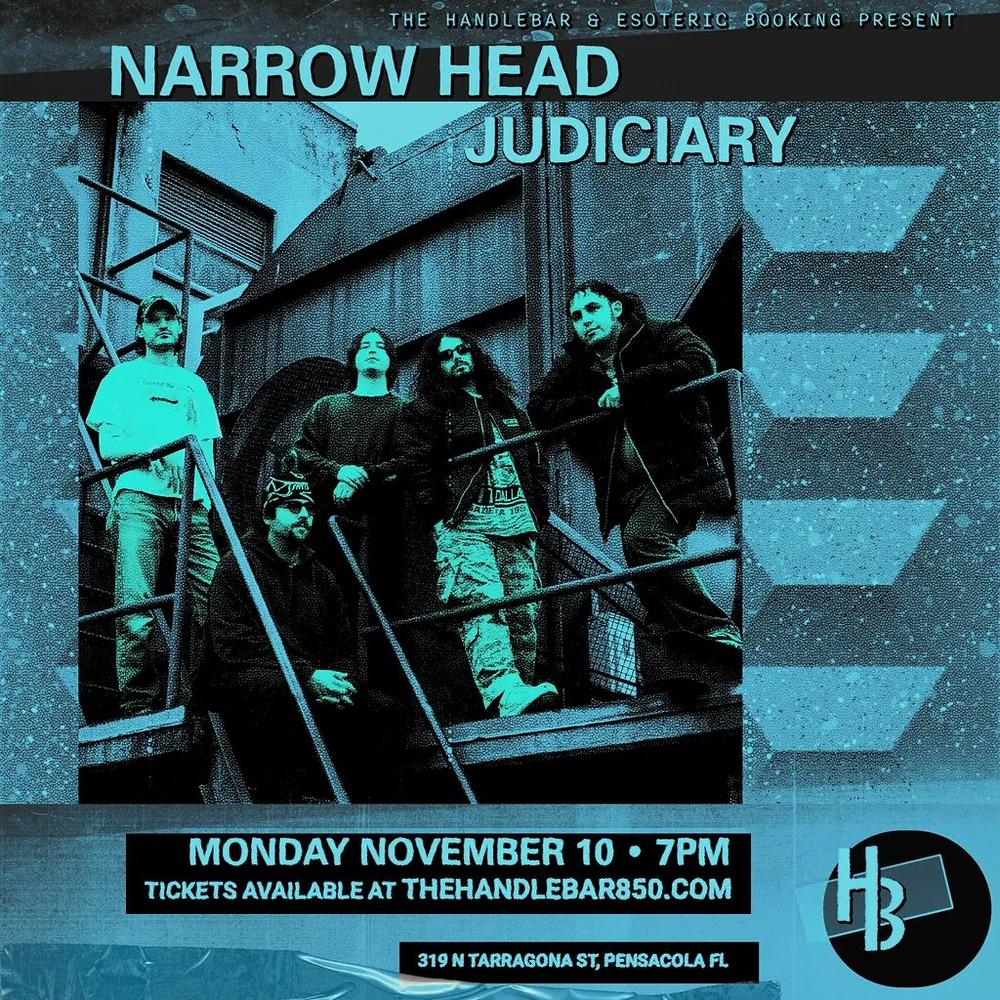

Narrow Head, Judiciary
Just announced for November! Stoked to bring @narrow_head and @judiciarytxhc to HB this fall 🍂 tickets on sale this Friday! - Truly great pop songs do not require a cheery outlook in order to work, nor do they pander to expectations of syrupy sweet easy-listening. Rather, the best pop music is a matter of refinement and pure intention, of dialing groove to melody so that the two might puncture the malaise of everyday living in unison, revealing some brief, sober truth about our shared human condition. On their third LP, Moments of Clarity (Run for Cover), Narrow Head have achieved precisely this feat. Traversing the depths of massive, churning riffs, often distorted to the point of violence, bouncing, lock-grooved rhythms, and crystalline, gorgeously constructed hooks, the Houston-based outfit puts on a masterclass in the art of writing songs that match the pain, pleasure, and confusion of modern living. Each track is sentimental without being precious, heavy without unnecessary griminess, pop-forward without letting the listener off the hook easy: these songs ask for some form of hurt or desire to be paid back to them in return, some promise that the listener is putting equal skin into the game.